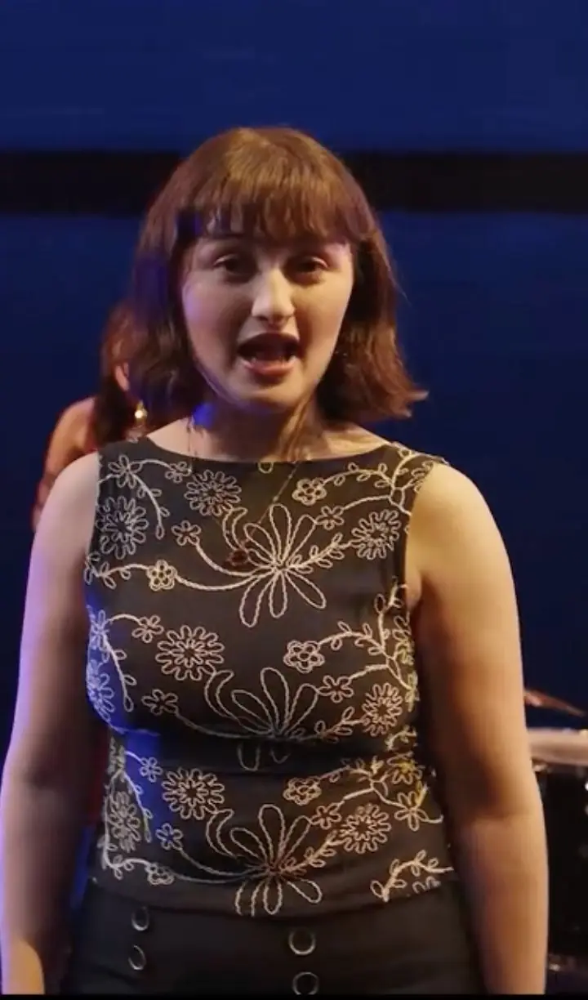

A portfolio in five movements
Emily Cruz
for voice, piano, accordion, guitar, bass guitar, double bass and saxophones
As of November 2026, Emily is in the UK tour of Pride and Prejudice* *(sort of), as 1st cover for Effie, Flo and Tillie.
I. Overture Showreels, the instrumental first
Spotlight hosts these reels. Nothing is sent to Spotlight until you press play; then your browser loads Spotlight's player from mediaviewer.spotlight.com, which sees your IP address and may set its own cookies.


II. Instrumentation Skills, one part per staff
Music
- Alto (voice)
- Piano
- Accordion
- Guitar
- Bass guitar
- Double bass
- Alto saxophone
- Tenor saxophone
- Musical director
Dance
- Commercial
- Jazz
- Tap
- Hip hop
Accents and dialects
- Standard English
- RP
- Heightened RP
- Cockney
- West Country
- Northern Irish
- American: East Coast
- American: New York
- American: Southern States
- Portuguese
- Spanish
Languages
- English
- Portuguese
- Spanish
Performance
- Actor-musician
- Laban training
Other
- Painting
- Crochet
- Knitting
- Cycling
- Field hockey
- Football
- Netball
- Swimming
- Car driving licence
- Playing age
- 15 to 25
- Height
- 5 ft 5 in (165 cm)
- Hair
- Light/mid brown, mid length
- Eyes
- Hazel
- Nationalities
- British, Portuguese
- Location
- Greater London
III. Repertoire Credits, latest first
- No. 10Pride and Prejudice* *(sort of) 1st Cover: Effie, Flo, Tillie2026David Pugh. Directed by Isobel McArthur.
- No. 9Vinegar Tom Musical Director/Ensemble2026Guildford School of Acting. Directed by Amy Wallace.
- No. 8Saturday Night Dino2026Guildford School of Acting. Directed by Simon Hardwick.
- No. 7The All New Adventures of Peter Pan Assistant MD2025Evolution Productions. Directed by Will Kenning/Eoin Mallon.
- No. 6I Should Be So Lucky Bonnie2025ATG Productions. Directed by Stuart Morley.
- No. 5Tom's Midnight Garden Aunt Grace2025Guildford School of Acting. Directed by Cressida Carré.
- No. 4Into The Woods Keys 22025Project Theatre Company. Directed by Owen White.
- No. 3She Loves Me Maraczek2025Guildford School of Acting. Directed by Phyllida Crowley Smith.
- No. 2Twelve Angry Men Juror 32025Guildford School of Acting. Directed by Anna Tringham.
- No. 1Coriolanus Sicinius2024Guildford School of Acting. Directed by Chris Palmer.
Training. Guildford School of Acting, BA (Hons) Actor-Musician, 3 years, 2023 to 2026.
IV. Interlude Plates




V. Coda Representation
For casting and all enquiries, please contact Emily's agent.
GallowaysHenry Wood House, 4-5 Langham Place
London W1B 3DG
020 7631 3134 or 07752 705359
agents@gallowaysagency.com